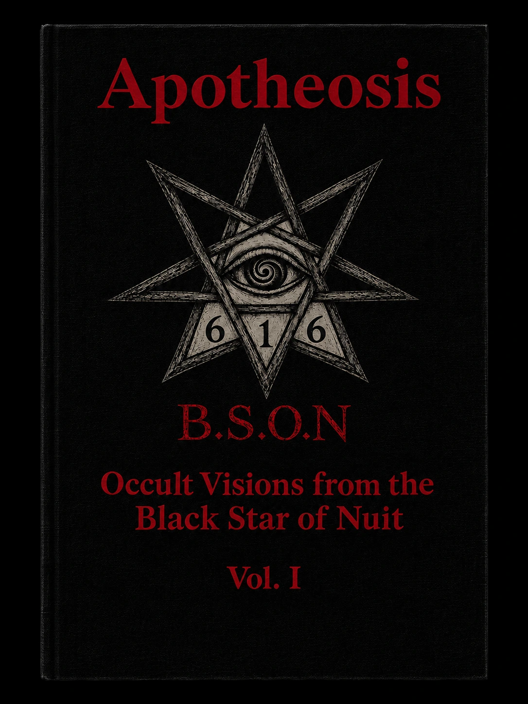

Listen on Spotify
Listen on Apple Music
Amongst other things, making these albums is a way for me to climb back up the ladder towards a higher state of consciousness. The alternation between Sadie LaBounty and the LaBounty Warriors reflects two complementary movements in that ascent: surrender and the assertion of sovereignty.
'I can give an explanation to the saying 'the initiate kills the initiator' only as it refers to the abstract and impersonal plane. In this case, it is only about two phases of the work of initiation.
During the first phase, the initiate is in passive position in relation to the initiator: he receives force from him. This is the phase that Hermeticism indicates with the Moon (Luna) and Water, also defined as Albedo.
In the second phase, however, the initiate seizes this force, making himself a new centre; this makes him independent, signifying in a certain sense the 'murder' of the initiator on whom he initially depended. Hermeticism defines this as the solar phase—the work of Fire, also called Rubedo.
This saying is significant: before the mother gives her son to the light; the son then dominates the mother and kills her. Similar examples are found even in other traditions. So also in the Ghibelline idea, according to which the ruler, after receiving the consecration (the first phase), feels himself independent and superior in relationship to the ordained (the priest), the same content of meanings is reflected.'

Apotheosis
Next year I will be contributing three essays to the journal Apotheosis, exploring how we might relate to the dark forces that have come to dominate the world. The first approaches this question from the Perennialist perspective; the second considers the more sympathetic view of occultists such as Kenneth Grant and Thomas Karlsson; the third considers how these ideas might be put into practice, drawing on modern occult currents such as the Black Star of Nuit and Thursatru.
Visit the Black Star of NuitContact
Get in touch.
For enquiries concerning music, collaborations or anything else, you can contact me here.
labountywarriors@gmail.com